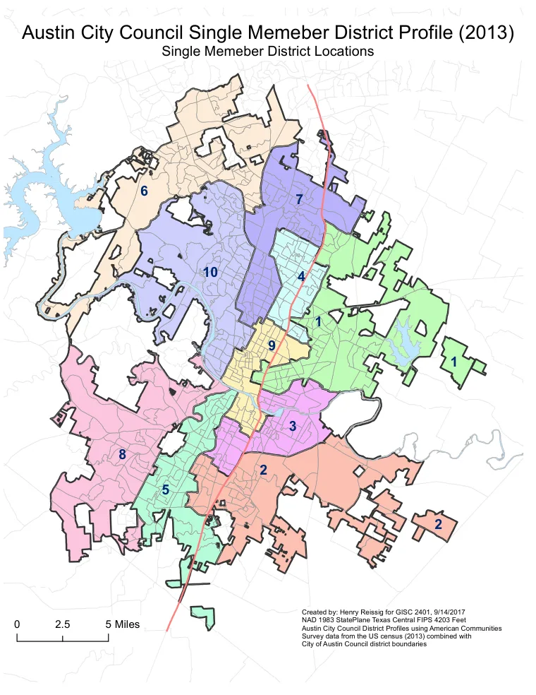

GIS & GEOGRAPHY PORTFOLIO AUSTIN, TEXAS
Henry Reissig's
Academic & Professional Portfolio
Maps and spatial analysis that explore how people, communities, and landscapes connect.
Henry Reissig, GISP · Geographic information systems, cartography, and applied research.
Explore the projects
Austin City Council District ProfilesTHE PROJECT COLLECTION
Geography, in practice.
Professional work & academic studies
projects · Maps, reports & multimedia
No matching projects
Try a different search or category.
BEHIND THE MAPS
Henry Reissig, GISP
I use GIS to examine access to services, understand demographic patterns, and communicate the geography of communities and landscapes. This collection brings together my professional work and academic projects in spatial analysis, cartography, imagery, and geographic research.
A foundation in geography
Master of Applied Geography
Texas State University · 2015
A.A.S. in Geographic Information Systems
Austin Community College · 2025